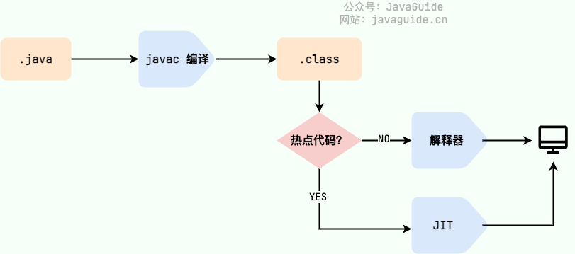
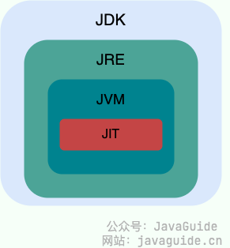

Java概述 #
1.1 Java是什么？ #
计算机语言：人与计算机之间进行信息交流沟通的一种特殊语言。
==Java是一门非常火的计算机语言。==
1.2 JDK的安装目录介绍 #
| 目录名称 | 说明 |
|---|---|
| bin | 该目录下存放了JDK的各种工具命令。javac和java就放在这个目录。 |
| conf | 该目录下存放了JDK的相关配置文件。 |
| include | 该目录下存放了一些平台特定的头文件。 |
| jmods | 该目录下存放了JDK的各种模块。 |
| legal | 该路径下存放了JDK各模块的授权文档。 |
| lib | 该路径下存放了JDK工具的一些补充jar包。 |
1.3 BUG #
在电脑系统或程序中，隐藏着的未被发现的缺陷或问题统称为bug(漏洞)。
1.4 Java的三大平台 #
1.4.1 JavaSE #
Java 平台标准版，Java 编程语言的基础，它包含了==支持 Java 应用程序开发和运行的核心类库以及虚拟机等核心组件==。Java SE 可以用于构建桌面应用程序或简单的服务器应用程序。
1.4.2 JavaME #
java语言的小型版，==用于嵌入式消费类电子设备或者小型移动设备的开发。==
其中最为主要的还是小型移动设备的开发（手机）。渐渐的没落了，已经被安卓和IOS给代替了，不过安卓也是用Java来开发的。
1.4.3 JavaEE #
Java 平台企业版，建立在 Java SE 的基础上，==包含了支持企业级应用程序开发和部署的标准和规范==（比如 Servlet、JSP、EJB、JDBC、JPA、JTA、JavaMail、JMS）。 Java EE 可以用于构建分布式、可移植、健壮、可伸缩和安全的服务端 Java 应用程序，例如 Web 应用程序。
1.5 Java的主要特性 #
- 面向对象（封装，继承，多态）
- 安全性（Java 语言本身的设计就提供了多重安全防护机制如访问权限修饰符、限制程序直接访问操作系统资源）
- 支持多线程（ C++ 语言没有内置的多线程机制，因此必须调用操作系统的多线程功能来进行多线程程序设计，而 Java 语言却提供了多线程支持）
- 简单易用（语法简单，上手容易）
- 开源
- 跨平台（ Java 虚拟机实现平台无关性）
修正：C++11 开始（2011 年的时候）,C++就引入了多线程库，在 windows、linux、macos 都可以使用
std::thread和std::async来创建线程。参考链接：http://www.cplusplus.com/reference/thread/thread/?kw=thread
1.6 Java语言跨平台的原理 #
- 操作系统本身是不认识java语言的。
- 针对于不同的操作系统，java提供了不同的虚拟机（JVM）。
虚拟机会把java语言翻译成操作系统可以看的懂的语言。
1.7 JVM & JRE & JDK #
==JVM，java虚拟机。==
==JRE，java运行环境，包含了JVM和java的核心类库（Java API）==
==JDK,称为java开发工具，包含了jre和开发工具。==
当我们在安装时，只需要安装JDK即可，它包含了java的运行环境和虚拟机。
1.7.1 JVM #
Java 虚拟机（Java Virtual Machine, JVM）是运行 Java 字节码的虚拟机。==JVM 有针对不同系统的特定实现（Windows，Linux，macOS），目的是使用相同的字节码，它们都会给出相同的结果==。字节码和不同系统的 JVM 实现是 Java 语言“一次编译，随处可以运行”的关键所在。
如下图所示，不同编程语言（Java、Groovy、Kotlin、JRuby、Clojure …）通过各自的编译器编译成 .class 文件，并最终通过 JVM 在不同平台（Windows、Mac、Linux）上运行。
JVM并不止有一种，只要满足JVM规范，每个公司、组织或者个人都可以开发自己的专属JVM，我们平时接触到的 HotSpot VM 仅仅是是 JVM 规范的一种实现而已，我们可以在Java SE Specifications 上找到各个版本的 JDK 对应的 JVM 规范。
下面这张图是 JVM 的大致结构模型。
1.7.2 JDK和JRE #
==JDK（Java Development Kit）是一个功能齐全的 Java 开发工具包，供开发者使用，用于创建和编译 Java 程序==。它包含了 JRE（Java Runtime Environment），以及编译器 javac 和其他工具，如 javadoc（文档生成器）、jdb（调试器）、jconsole（监控工具）、javap（反编译工具）等。
==JRE是运行已编译 Java 程序所需的环境==，主要包含以下两个部分：
- JVM : 也就是我们上面提到的 Java 虚拟机。
- Java 基础类库（Class Library）：一组标准的类库，提供常用的功能和 API（如 I/O 操作、网络通信、数据结构等）。
简单来说，JRE 只包含运行 Java 程序所需的环境和类库，而 JDK 不仅包含 JRE，还包括用于开发和调试 Java 程序的工具。
如果需要编写、编译 Java 程序或使用 Java API 文档，就需要安装 JDK。某些需要 Java 特性的应用程序（如 JSP 转换为 Servlet 或使用反射）也可能需要 JDK 来编译和运行 Java 代码。因此，即使不进行 Java 开发工作，有时也可能需要安装 JDK。
下图清晰展示了 JDK、JRE 和 JVM 的关系。
从 JDK 9 开始，就不需要区分 JDK 和 JRE 的关系了，取而代之的是模块系统（JDK 被重新组织成 94 个模块）+ jlink 工具 (随 Java 9 一起发布的新命令行工具，用于生成自定义 Java 运行时映像，该映像仅包含给定应用程序所需的模块) 。并且，从 JDK 11 开始，Oracle 不再提供单独的 JRE 下载。
1.8 Java语言的运行 #
Java 程序从源代码到运行的过程如下图所示：
我们需要格外注意的是 .class->机器码 这一步。**在这一步 JVM 类加载器首先加载字节码文件，然后通过解释器逐行解释执行，这种方式的执行速度会相对比较慢。**而且，有些方法和代码块是经常需要被调用的(也就是所谓的热点代码)，所以后面引进了 JIT（Just in Time Compilation） 编译器，而 JIT 属于运行时编译。**当 JIT 编译器完成第一次编译后，其会将字节码对应的机器码保存下来，下次可以直接使用。**而我们知道，机器码的运行效率肯定是高于 Java 解释器的。这也解释了我们为什么经常会说 Java 是编译与解释共存的语言。
扩展：有关JIT实现的细节：JVM C1、C2编译器

HotSpot1 采用了惰性评估(Lazy Evaluation)的做法，根据二八定律，消耗大部分系统资源的只有那一小部分的代码（热点代码），而这也就是 JIT 所需要编译的部分。JVM 会根据代码每次被执行的情况收集信息并相应地做出一些优化，因此执行的次数越多，它的速度就越快。
JDK、JRE、JVM、JIT
这四者的关系如下图所示。

为什么说 Java 语言“编译与解释并存”？
因为 Java 语言既具有编译型语言的特征，也具有解释型语言的特征。Java 程序要经过先编译，后解释两个步骤，由 Java 编写的程序需要先经过编译步骤，生成字节码（.class 文件），这种字节码必须由 Java 解释器来解释执行。
我们可以将高级编程语言2按照程序的执行方式分为两种：
编译型：编译型语言会通过编译器将源代码一次性翻译成可被该平台执行的机器码。一般情况下，编译语言的执行速度比较快，开发效率比较低。常见的编译性语言有 C、C++、Go、Rust 等等。
解释型：解释型语言会通过解释器一句一句的将代码解释（interpret）为机器代码后再执行。解释型语言开发效率比较快，执行速度比较慢。常见的解释性语言有 Python、JavaScript、PHP 等等。
为了改善解释语言的效率而发展出的即时编译技术，已经缩小了这两种语言间的差距。这种技术混合了编译语言与解释型语言的优点，它像编译语言一样，先把程序源代码编译成字节码。到执行期时，再将字节码直译，之后执行。Java与LLVM是这种技术的代表产物。
1.8.1 JIT与AOT #
JDK 9 引入了一种新的编译模式 AOT(Ahead of Time Compilation) 。和 JIT 不同的是，这种编译模式会在程序被执行前就将其编译成机器码，属于静态编译（C、 C++，Rust，Go 等语言就是静态编译）。**AOT 避免了 JIT 预热等各方面的开销，可以提高 Java 程序的启动速度，避免预热时间长。**并且，AOT 还能减少内存占用和增强 Java 程序的安全性（AOT 编译后的代码不容易被反编译和修改），特别适合云原生场景。
JIT 与 AOT 两者的关键指标对比:
可以看出，AOT 的主要优势在于启动时间、内存占用和打包体积。JIT 的主要优势在于具备更高的极限处理能力，可以降低请求的最大延迟。
既然 AOT 这么多优点，那为什么不全部使用这种编译方式呢？
AOT 更适合当下的云原生场景，对微服务架构的支持也比较友好。除此之外，==AOT 编译无法支持 Java 的一些动态特性==，如反射、动态代理、动态加载、JNI（Java Native Interface）等。然而，很多框架和库（如 Spring、CGLIB）都用到了这些特性。如果只使用 AOT 编译，那就没办法使用这些框架和库了，或者说需要针对性地去做适配和优化。举个例子，CGLIB 动态代理使用的是 ASM 技术，而这种技术大致原理是运行时直接在内存中生成并加载修改后的字节码文件也就是 .class 文件，如果全部使用 AOT 提前编译，也就不能使用 ASM 技术了。为了支持类似的动态特性，所以选择使用 JIT 即时编译器。
1.9 Java和C++的区别 #
- Java 不提供指针来直接访问内存，程序内存更加安全
- Java 的类是单继承的，C++ 支持多重继承；虽然 Java 的类不可以多继承，但是接口可以多继承。
- Java 有自动内存管理垃圾回收机制(GC)，不需要程序员手动释放无用内存。
- C ++同时支持方法重载和操作符重载，但是 Java 只支持方法重载（操作符重载增加了复杂性，这与 Java 最初的设计思想不符）。
- ……